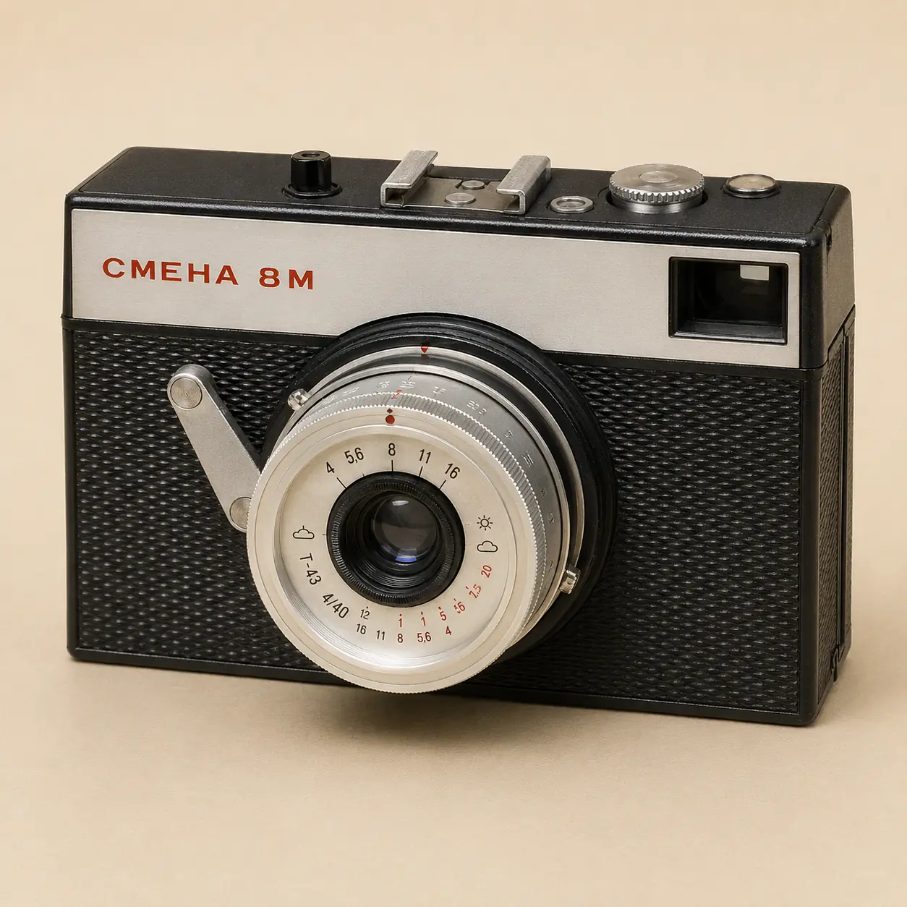
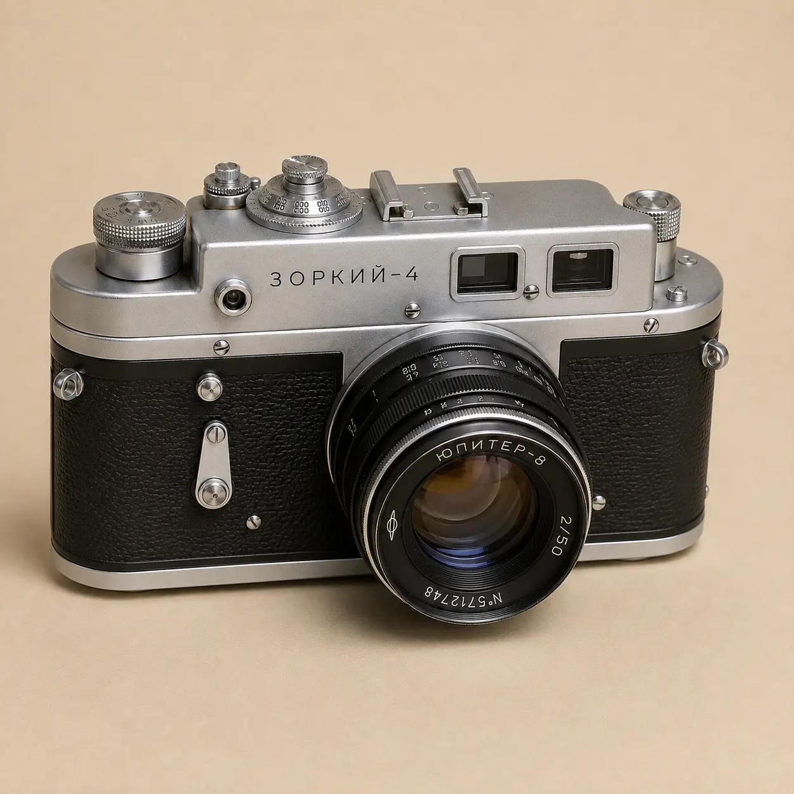

Start with the way you want to focus
For a first Soviet film camera, a tested Zenit-TTL or Zenit-12XP is a practical starting point if you want to focus through the taking lens and use a built-in meter. Choose a Smena 8M if you would rather use a fixed-lens camera and learn to estimate distance. These are recommendations based on the different ways the cameras work, rather than a claim that one model suits every beginner. [1]
A FED-2 or Zorki-4 offers another route: a coupled rangefinder, where you align images in the finder to focus. Kiev cameras need a closer look at the model name because the range includes both 35mm rangefinders and medium-format SLRs. Start with the kind of shooting you want to learn, then compare the condition, controls and equipment supplied with the actual camera. [4][3]
| Camera | Film and viewing system | Consider it if… |
|---|---|---|
| Zenit-TTL / 12XP | 35mm SLR | You want to focus through the taking lens. |
| Smena 8M | 35mm viewfinder | You want to practise estimating subject distance. |
| FED-2 / Zorki-4 | 35mm rangefinder | You want to learn coupled-rangefinder focusing. |
| Kiev-4A | 35mm rangefinder | You prefer this model’s particular controls. |
| Kiev-60 | 120 medium-format SLR | You specifically want to start with medium format. |
Zenit: the straightforward SLR route
The Zenit-TTL and 12XP are manual 35mm SLRs with through-the-lens exposure metering. Looking through the taking lens lets you judge focus and framing directly. The meter helps you choose exposure settings; it does not make the camera autofocus or choose all the settings for you. These models are useful options for someone who wants to learn the relationship between aperture, shutter speed and focus. [1]
The familiar Zenit-E works differently: its selenium meter measures light separately from the taking lens. Do not assume that every Zenit has the same meter or controls. Before buying, ask whether the meter on that particular body works, which battery its manual specifies where relevant, and which lens is included. If you plan to use a separate meter, make that a deliberate choice when comparing listings. [1]
Smena 8M: simple equipment, more estimating
The Smena 8M is a 35mm viewfinder camera with a fixed T-43 40mm f/4 lens. Focusing is set by distance rather than by a coupled rangefinder or an SLR focusing screen. You look through a separate finder to compose, then set the lens for the estimated subject distance. Its simplicity therefore changes the skills you practise; it does not remove the need to think about focus. [2]
Choose it if estimating distance and setting exposure yourself appeal to you. A separate light meter can help while you learn. If you expect to confirm sharp focus by looking through the lens, choose an SLR instead. Before committing to a Smena, read its loading and operating instructions and ask the seller to demonstrate the controls, rather than assuming that its modest appearance means automatic operation. [2]

FED and Zorki: choose the rangefinder experience
The FED-2 and Zorki-4 are manual 35mm cameras with coupled rangefinders and interchangeable lenses. Their focusing system is different from an SLR: the rangefinder helps establish focus, while the finder provides a separate view for composition. Neither of these two models provides a built-in exposure meter. Allow for an external meter and time to learn the focusing patch and the camera’s loading procedure. [4][3]
For a first purchase, ask for a clear finder, a visible rangefinder patch and evidence that the focusing system agrees with the fitted lens. Prefer a demonstrated working camera to an untested example selected only for its appearance. Read the exact model’s manual before operating it: for the Zorki-4, the shutter must be cocked before changing shutter speeds. Do not assume that the control sequence is identical across every Soviet camera. [3]

Kiev: identify the format before deciding
A Kiev-4A is a 35mm rangefinder camera. A Kiev-60 is a different proposition: it is a medium-format SLR associated with 6×6 photographs on 120 roll film. The shared Kiev name does not describe one film format or one set of controls. Check the complete model designation before ordering film, a lens, a finder or any other accessory. [5][6]
For a first camera, choose a Kiev rangefinder only if its particular controls and focusing system appeal to you and the example can be demonstrated working. Consider a medium-format Kiev when you specifically want that format and are ready to learn its loading procedure. There is no need to begin with the most elaborate system; a complete, tested camera is a more useful learning tool than an incomplete kit. [5][6]
What to ask before you buy
Ask what “working” means in the listing. A shutter that fires is only one part of the demonstration you want. Request information about film advance and rewind, shutter operation at different settings, the lens and focusing mechanism, and the meter if fitted. Ask whether the seller has actually exposed and developed a test roll, and whether sample negatives or scans come from the exact camera being offered.
Confirm the included lens, caps and any model-specific accessories, and ask about servicing and the return policy. Budget for film, processing and scanning as well as the camera itself. Once it arrives, use the correct manual and shoot an early test roll before relying on it for important photographs. The final choice is the model whose handling you want to learn, in a condition you can verify.
Related reading: Zenit: The Soviet SLR That Went Everywhere.
Sources
- Soviet Cameras — Zenit camera family — retrieved 2026-11-22.
- Soviet Cameras — Smena 8M — retrieved 2026-11-22.
- Soviet Cameras — Zorki-4 — retrieved 2026-11-22.
- Soviet Cameras — FED-2 — retrieved 2026-11-22.
- Kiev-4 / Kiev-4A — English instruction manual transcription — retrieved 2026-11-22.
- Kiev-60 — instruction manual transcription — retrieved 2026-11-22.